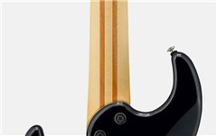
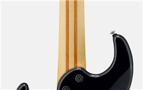

SERIE BB
En la serie BB Yamaha siempre ha buscado ofrecer a los bajistas un bajo en estado puro. Dejando a un lado modas tecnológicas pasajeras, Yamaha ha primado las tecnologías y técnicas de producción contrastadas, y es por ello que cada modelo de la serie BB es el resultado de nuestro compromiso: un bajo que te permita dar forma a tu propio sonido, en lugar de definirlo nosotros por ti. Los nuevos modelos continúan esta tradición de excelencia y fiabilidad en unos bajos magníficamente construidos. Siempre podrás confiar en ellos para conseguir el sonido que necesitas, en cualquier situación.
Cuerpo de aliso, arce, caoba y aliso. Mástil de cinco piezas
Este nuevo BB está construido con un cuerpo multilaminado aliso/arce/aliso. La pieza central de arce, de gran dureza, incrementa la rigidez del cuerpo y acentúa los medios para que el bajo se abra paso en la mezcla, además de permitir una transmisión más uniforme de las vibraciones entre el cuerpo y el mástil de arce para conseguir una resonancia y un sustain incomparables. El mástil de la nueva serie BB está compuesto por 5 láminas de arce y caoba, con un diseño atornillado que proporciona un ataque pronunciado y gran rapidez de respuesta. Esta construcción es duradera, resiste las deformaciones y torsiones, y aporta al sonido del instrumento el carácter compacto y penetrante del arce combinado con la calidez de la caoba.
 

Pastillas V7 Custom YGD y previo
Los imanes de alnico producen un tono grueso
a la vez que penetrante que combina a la perfección con la singular construcción de aliso/arce/aliso de los modelos 700 y Pro, consiguiéndose un sonido orgánico y de gran definición. Los nuevos modelos BB creados por YAMAHA, están equipados con un control de tono y dos controles de volumen para mayor versatilidad a la hora de dar forma al sonido.
Puente Vintage Plus y Clavijas de afinación ligeras.
Los modelos 700 y los Pro están equipados con el puente Vintage Plus que incorpora la opción de encordar en diagonal a través del cuerpo, de modo que las cuerdas se angulan en la selleta y pasan a través del instrumento formando un ángulo de 45 grados con respecto al puente, de forma totalmente diferente al encordado vertical tradicional que imprime más tensión sobre las cuerdas. Las clavijas de afinación de bajo peso mejoran el equilibrio del instrumento y resultan un complemento perfecto para el cuerpo más reducido y ligero de los nuevos BB.
Información del Producto - BBP34
Precio de venta recomendado: 1.921,00 €
Fabricado en Japón, este bajo de construcción de aliso/arce/aliso tratada con tecnología IRA exclusiva de Yamaha, unión del cuerpo al mástil angulada con seis tornillos, puente con encordado a través del cuerpo o del puente y selletas reversibles es la máxima expresión de los BB.